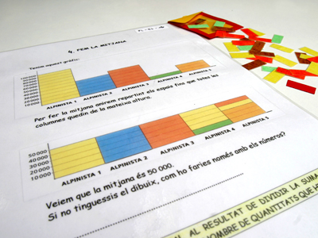

Descripción: Muestra de actividades sencillas para distribuir las frecuencias y llegar a la noción de media aritmética.
Utilidad: Comprender el concepto de media y saberlo aplicar correctamente. Como consecuencia pueden deducir la forma de calcularla, aunque esto no es prioritario.
Nivel: Ciclos medio de primaria.
Fuente: GAMAR |
 |